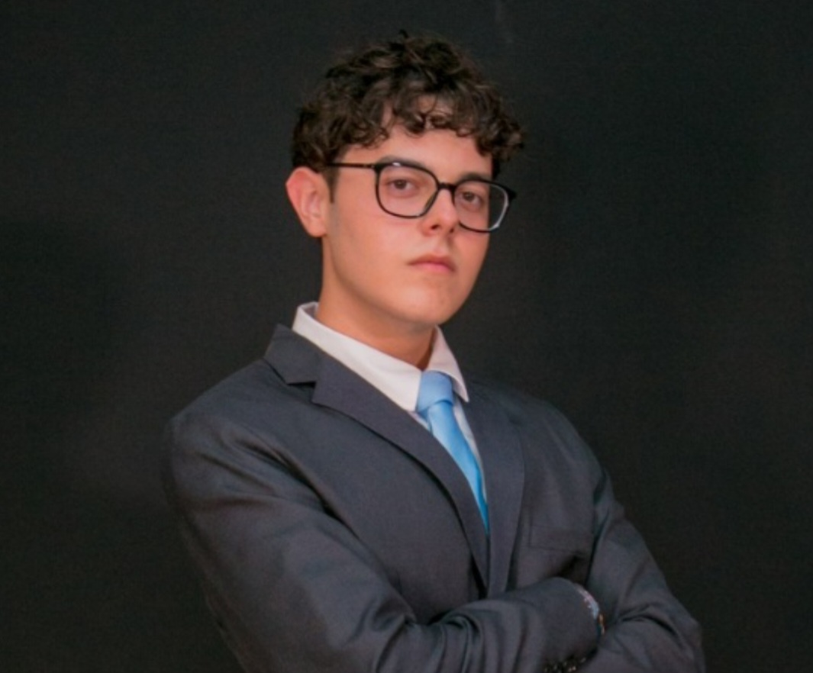

Dados Pessoais
Nome: Lucas Schutz
E-mail: lucasschutz49@gmail.com
Telefone: (48) 99156-6974
Experiência Profissional
Cargo: Profissional em TI
Descrição: Programador Junior, está cursando 2 cursos simultaneamente, onde nestes aprende Python e Html
Formação Acadêmica
Curso: ADS - Análise e desenvolvimento de sistemas
Instituição: FMP - Faculdade municipal de Palhoça
Ano de Conclusão: 2027
Formação Acadêmica
Curso: Ciências da computação
Instituição: Unisul
Ano de Conclusão: 2028